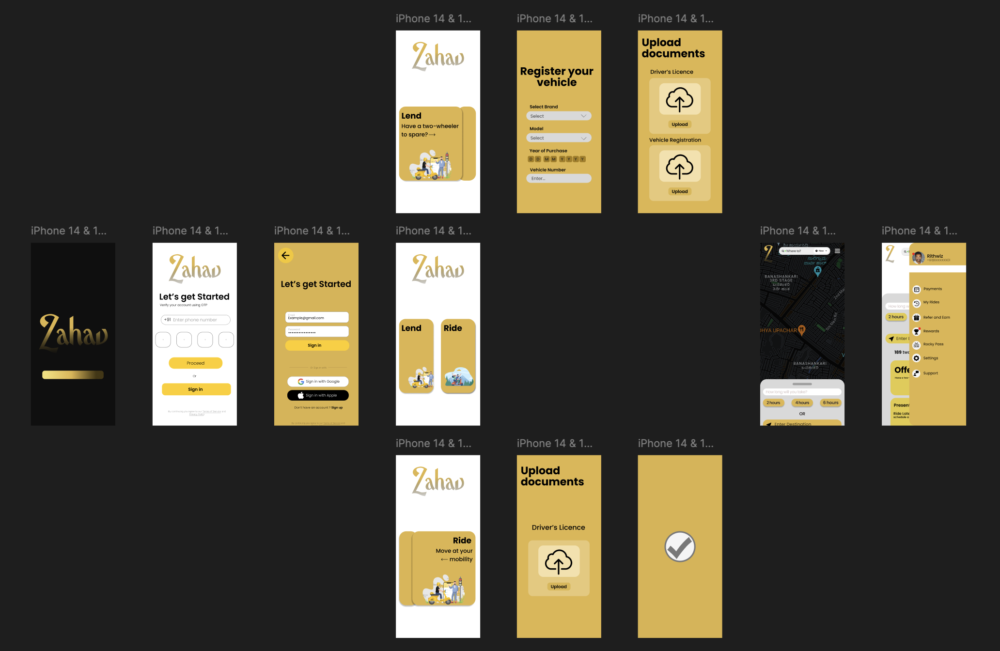

I Built a Startup Idea in College. Years Later, I Went Back to Kill It.
I reopened my old college app (a peer-to-peer scooter-rental idea called Zahav) and stress-tested it as a PM, with no mercy. It didn't survive. Here's exactly where it broke, and why a well-reasoned "no" was the best thing it ever produced.

Back in college I had an idea. The kind you get at midnight, convinced you've found the gap nobody else noticed. I made a whole prototype for it. Screens, user journey, a logo, the works. Called it what I thought I had struck: Zahav ("Gold" in Hebrew).
I never got to building the thing and it remained a college project. Specifically, it came out of an entrepreneurship elective that let us pick any startup idea and build it out as coursework. Which looking back, was a pretty good deal: two birds, one stone. I got to think through an idea I had and also get the assignment done. But once the course ended with my team bagging the best project award, the idea stuck with me for a couple years, sitting in that same old Figma file.
Last week I stumbled upon that file again, except this time I wasn't looking at it as a hopeless 20-something with a cool idea. I was looking at it as a product manager, someone who gets paid to ask the annoying questions.
So, over a cup of coffee, I decided to tear down my own college idea and stress-test it the way I would tear apart any other product today. No mercy, let's see if it survives.
The idea
Before the pitch, a few numbers to set the scene, because these are the reason the itch never really went away. India has somewhere around 260 to 270 million registered two-wheelers on its roads today, more per person than almost any other country on earth. My own city, Bengaluru, crossed 7.5 million of them by itself as of late 2024, which is more two-wheelers sitting in one city than most entire countries own. And on the demand side, people are clearly willing to pay to move around on two wheels: Rapido alone is pulling somewhere around 60 to 70 million monthly active users and several million rides a day. That is a massive amount of metal and rubber sitting idle for most of the day, next to a genuinely massive number of people already paying strangers to ride them around on two wheels. That gap is what the idea was trying to sit inside of.
Here is the pitch.
You own a scooter/bike, and it sits at home doing nothing for most of the day while you are at work. A depreciating asset, spending the majority of its day in a parking spot. So what if you could just make it available and let someone nearby use it for a few hours, they return it once they're back, and you make a little money off it. Your bike works while you do not. Kinda like asking your friend in the hostel if you can borrow their scooter and paying them with some extra fuel in the tank.
There would be two kinds of people on the app. Lenders, who own the vehicle, and riders, who borrow it. We as a company take a small cut on every ride. And because there is no driver in the middle, no Rapido guy you have to pay out, this is, in theory, about the cheapest way to get around a city exactly from point A to B that could possibly exist.
College me thought this was genius, and to be fair, part of it kind of is, at least at the surface level.
The part that is actually good
Let me be fair here, because I did get a few things right.
The core insight does hold up. Personal vehicles genuinely do sit idle most of the day, and that slack is a potentially solvable problem.
The cost logic holds up too. In any bike taxi (one of the cheapest modes of precise transport available today), the biggest cost is paying the human who drives, so if you take that person out, the cost drops. On that specific point college me was correct, and this whole idea sits in a category called "P2P rental": basically people renting stuff directly from other people instead of from a company. Think Turo for cars in the US. Turo, Bounce and Yulu had already shown that both P2P rental and cheap street-level two-wheelers can work. So I was not inventing something out of thin air, I was remixing a couple of things that already worked.
There is another pro I had actually thought about back then: safety. Because the rider is riding the two-wheeler themselves, there is no stranger involved at all. No random driver you have to trust, and no unknown person you are physically stuck with for the length of a trip. That matters for everyone, but it matters a lot more for women. A big reason a lot of women avoid bike taxis is the discomfort of having to sit behind a man they have never met, and Zahav aimed to remove that person from the equation entirely. You turn up, unlock a bike, you ride it yourself, and nobody else is part of the journey. In a country where that specific anxiety is a real and daily thing, "no stranger in the loop" isn't just a small feature, but arguably one of the stronger things the model has going for it.
Well, those are a handful of strengths. And yet still it was not enough, for the reasons below.
Where everything breaks
Well, for one, it is kinda illegal by design as per today's regulations. In India a privately registered vehicle, a normal white number plate scooter, cannot legally be rented out for money, because renting needs commercial registration and a handful of permits. So the whole heart of my idea runs straight into a wall, and it isn't even a gray area situation, but a hard no. It is also precisely why Bounce and Yulu chose owning their own fleets instead of using people's personal bikes, which means I had unknowingly designed the exact model the market learned does not work legally.
Two, the return trip voids the "cheapest transport" claim. If you think it through, the rider has to go get the bike from the lender's spot and then bring it all the way back there when they are done, which makes it a roundtrip. A Rapido is one way, you hop off and leave it. So Zahav is not really "get me from A to B cheap," but closer to "rent a bike for a planned errand and bring it back," which is a different product for a different user, possibly with a way smaller PMF. More like a micro-rental than a transport service.
Three, nobody wants to hand a stranger the bike they're gonna need tomorrow. A rental company can afford to shrug off a scratched vehicle, but a normal person lending their only scooter, the one they need for work the next morning, cannot. Who pays if it gets damaged, whose insurance covers it, what if it just never comes back? What if it is involved in a crime or breaks traffic laws? In India, for personal P2P vehicles, none of these have clean answers and every unanswered one of them is a reason a sane person just keeps their bike at home.
Four, it needs some hardware. For the whole "make it available while I am at work" thing to work without you physically handing over keys, every bike needs a smart lock and some IoT on it, which is the expensive stuff Bounce and Yulu burned crores on. Rash driving detection, GPS, etc. The idea would quietly involve a hardware and operations nightmare.
Five, the chicken and egg problem. Every marketplace has the empty-on-day-one issue, but mine was worse because both sides have to be in the same tiny area at the same time. Your idle bike from 9 to 6 only matters if someone needs a bike from 9 to 6 basically next door, so you need crazy density before it feels alive at all.
The math doesn't fit well either
Quick napkin math. Say a rider pays around 40 rupees for a short hop, nice and cheap, and we take 20 percent of that, so ~8 rupees. Out of those 8 rupees come payments, infrastructure, insurance, hardware wear, support, marketing, and the cost of acquiring both lenders and riders.
You can see the trap forming. The exact thing that makes it cheap for the rider also makes each commission tiny, so thin money per ride only works at genuinely crazy volume, and the density problem from earlier is what makes that volume so hard to reach. The model needs scale just to be able to stay afloat and then fights uphill the whole way there, which is a rough spot to be starting from.
The decision
Back then the question in my head was whether I could build this, but that was never really the interesting question, because you can build almost anything. The question that actually matters is what would have to be true for this to be worth building.
For Zahav, a few things all had to be true at the same time. There had to be a legal way for regular people to rent out their bikes. The product had to pick one job and win it instead of straddling two and winning neither. And the already meagre per ride money had to survive insurance and hardware and acquisition costs at a density I could actually reach.
What changed
Zahav never launched, and it probably never will. But a quick look-back at it made me a slightly better PM in hindsight, which is not a bad return on a college project that only ever existed as a set of screens.
Not every good insight and eureka moment is a good business. The best output of this entire project, and the one I'm actually proud of, is a well-reasoned no. As someone I revere told me, one of the greatest strengths of a PM is the ability to say "no."